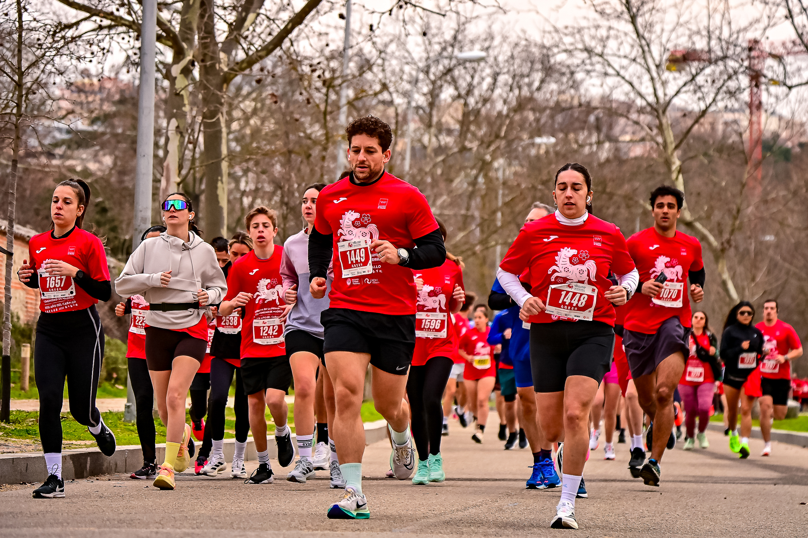
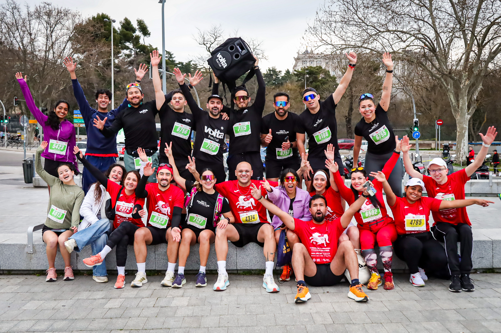

The Carrera de la Primavera Comunidad de Madrid 2026 – Año del Caballo took the start and finish on the Puente del Rey esplanade in Madrid Río on Sunday 1 March, offering three distances — 5, 8 and 16 kilometres — for runners of every level. Red shirts printed with a cherry-blossom horse, marking 2026 as the Year of the Horse in the Chinese zodiac, coloured the esplanade from the earliest starts of the morning.
Organisers billed it as the first popular race in Europe linked to the Lunar New Year, with more than 6,000 runners registered from over 50 nationalities. This year’s edition debuted new routes combining the Madrid Río promenade with the Casa de Campo, taking in Paseo de Extremadura, the Casa de Campo lake and the Paseo de los Plátanos before returning to the Puente del Rey finish line.

The race closed out the sixth Madrid Spring Festival, staged from 27 February to 1 March on the same esplanade and presented earlier this year at Fitur by festival director Javier Martínez Candial alongside Moncloa-Aravaca council president Borja Fanjul and Chinese Association Usera Spain president Enguan Chen. Organisers put the festival’s combined economic impact across sport, culture and tourism at more than €10 million, with over 25,000 visitors expected across the three days.

Image Media put a twenty-strong team of photographers and videographers on the course, from the Puente del Rey start arch to the new Casa de Campo sections and the finish-line celebrations, where running clubs including Volta Run Club gathered for their post-race team photos.
Galleries from the race are now live for participants to find and buy their photos, with the organisers receiving a full highlight pack to help promote next year’s edition.